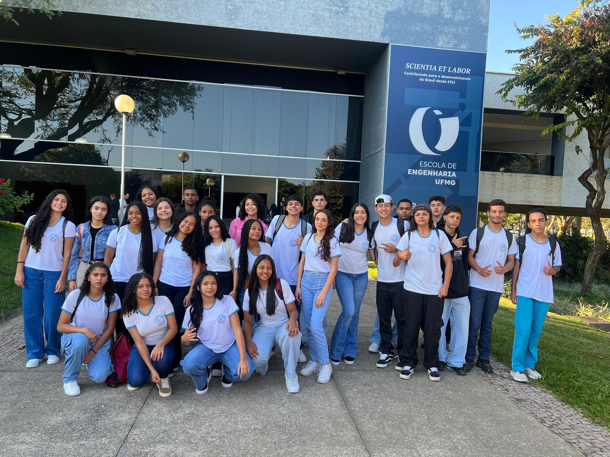

✨ Sobre o Projeto dos Alunos

O desenvolvimento deste portal envolveu conhecimentos interdisciplinares, como lógica de programação, design digital e documentação técnica, enriquecendo o processo de construção dos projetos.

Mais do que aprender ferramentas, os alunos demonstraram protagonismo, criatividade e colaboração em todas as etapas. Resultado do trabalho e aprendizado dos alunos do 2º ano do Ensino Médio em Tempo Integral – Técnico em Informática (turma de 2025) da E.E. Prof. Fábregas.
O principal objetivo foi proporcionar aos alunos uma experiência prática de desenvolvimento web, estimulando a compreensão de como idéias se transformam em interfaces funcionais e visualmente organizadas.
A turma, formada pelos estudantes Camilly, Cássio, Déborah, Eluiza, Erick, Felipe, Gabriel, Gabrielle, Hanya, Helena, Isabella, Isabelly, João Victor Souza, João Vítor Gabriel, Laene, Larissa, Lívia, Luiz Gabriel, Luiz Otávio, Manoela, Maria Auxiliadora, Maria Eduarda, Nayane, Paula, Pedro Henrique, Pedro Lucas, Sara Cristine, Sara Pereira, Sarah Heloisa e Thierry, mostrou empenho e evolução significativa ao longo do semestre. O resultado final evidencia não apenas o avanço técnico, mas também o amadurecimento desses jovens criadores de tecnologia, que enfrentaram desafios, trocaram conhecimentos e cresceram juntos ao desenvolver soluções reais